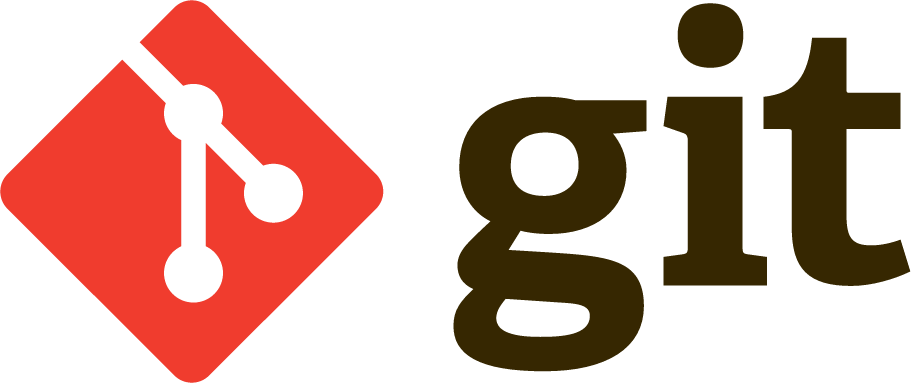

Система контролю версій Git
1. Системи контролю версій та Git
Система контролю версій (VCS — Version Control System) — це спеціалізоване програмне забезпечення, яке фіксує та структурує історію змін файлів у проєкті з плином часу. Воно дозволяє за потреби повернутися до будь-якої попередньої версії коду, детально порівняти ревізії, виявити авторів конкретних правок та ефективно організувати спільну командну роботу над кодовою базою без ризику випадкового перезапису чи втрати даних.
Git — це швидка децентралізована (розподілена) система контролю версій, розроблена Лінусом Торвальдсом у 2005 році для координації розробки ядра Linux. На відміну від застарілих централізованих систем (таких як Subversion чи CVS), у Git кожен розробник має на локальному комп'ютері повну копію всього репозиторію з історією комітів, що забезпечує миттєве виконання операцій та автономність роботи без постійного підключення до сервера чи мережі Інтернет.

2. Основні можливості та переваги використання Git
Розподілена архітектура
Кожен учасник проєкту має автономну копію повної бази даних репозиторію. Це усуває єдину точку відмови (Single Point of Failure) та дозволяє працювати повністю офлайн.
Висока швидкість та продуктивність
Створення комітів, перегляд історії та диференційні порівняння (diff) виконуються локально з миттєвим відгуком та мінімальними накладними витратами.
Легковажні гілки та злиття
Розгалуження (Branching) та злиття (Merging) реалізовано через легкі вказівники на зрізи стану (snapshots), що робить ізоляцію експериментів швидкою та безпечною.
Криптографічна цілісність
Усі об'єкти, коміти та файли підписуються криптографічним хешем (SHA-1 / SHA-256), що виключає можливість непомітного пошкодження або фальсифікації історії.
Область підготовки (Staging Area)
Проміжний індекс між робочим деревом та історією комітів надає гнучкий контроль над точним формування атомарних та логічно завершених комітів.
Командна співпраця та синхронізація
Зручні механізми Push/Pull та Pull Request дозволяють тисячам розробників одночасно працювати над кодовою базою без конфліктів.
3. 10 базових команд роботи в системі Git
| # | Команда | Коментар та практичне призначення |
|---|---|---|
| 1 | git init |
Ініціалізує новий порожній локальний репозиторій Git у поточній директорії (створює системну приховану папку .git). |
| 2 | git clone <url> |
Клонує існуючий віддалений репозиторій за вказаною адресою на локальну машину разом з усіма гілками та повною історією. |
| 3 | git status |
Показує поточний стан робочого дерева: відстежувані, змінені, видалені та додані до індексу файли. |
| 4 | git add <file> |
Додає зазначений файл (або git add . для всіх змінених файлів) до staging area для наступного коміту. |
| 5 | git commit -m "<msg>" |
Фіксує підготовлені в індексі зміни у вигляді нового зрізу історії з коротким пояснювальним повідомленням. |
| 6 | git branch |
Переглядає список локальних гілок (поточна відмічена зірочкою) або створює нову гілку при виклику git branch <name>. |
| 7 | git switch <branch> |
Перемикає робоче дерево на вказану гілку (сучасний безпечний аналог команди git checkout <branch>). |
| 8 | git merge <branch> |
Об'єднує історію змін із зазначеної гілки в поточну активну робочу гілку. |
| 9 | git pull |
Отримує найсвіжіші зміни з віддаленого сервера та автоматично зливає їх з поточною локальною гілкою. |
| 10 | git push <remote> <branch> |
Відправляє зафіксовані локальні коміти до віддаленого репозиторію (наприклад, git push origin main). |
4. Сертифікат курсу по Git
Підтвердження успішного завершення навчального курсу або сертифікації з практичного використання Git:
Місце для зображення сертифіката курсу
Додайте файл зображення (наприклад, certificate.png) та вкажіть його у тегу <img src="..." alt="Сертифікат">
5. Джерела інформації по темі
- Pro Git Book (Scott Chacon and Ben Straub) — Офіційний україномовний переклад — класичний академічний підручник з повною архітектурою внутрішньої будови Git.
- Git Reference Manual — офіційне вичерпне довідкове керівництво з усіх команд, ключів та параметрів.
- GitHub Documentation — посібники з командної розробки, pull requests та організації робочих процесів.
- Atlassian Git Tutorials — детальні методичні статті з Git workflows, злиття та розв'язання конфліктів.
- Learn Git Branching (Інтерактивний тренажер) — візуальна практична платформа для вивчення складних операцій з графом комітів.
- Google Gemini | AntiGravity — матеріал розроблено та згенеровано за допомогою штучного інтелекту AntiGravity.